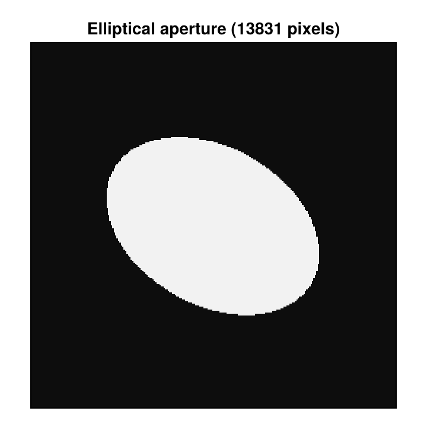
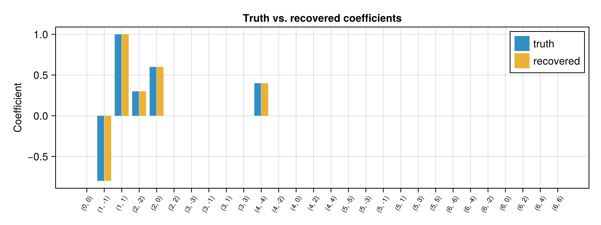
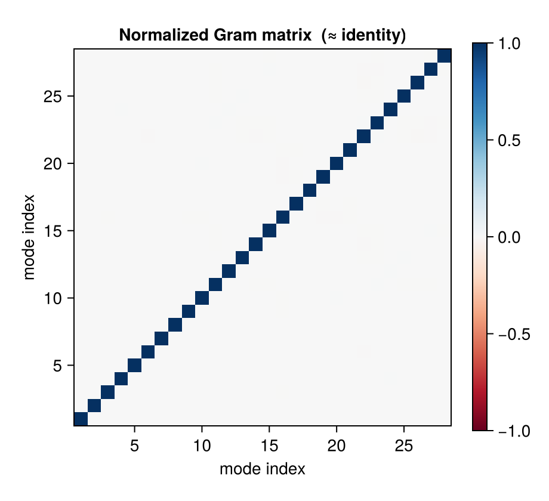
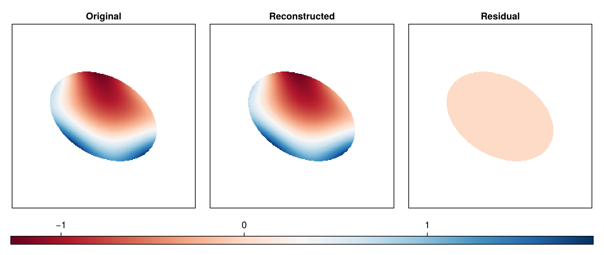
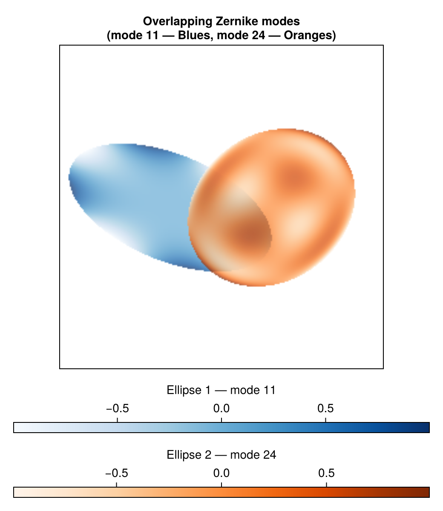

using PhaseBases
using LinearAlgebra
using CairoMakie
CairoMakie.activate!(; type="png")Zernike Decomposition in an Elliptical Aperture
In experimental interferometry the exit pupil is rarely a perfect circle on the camera chip. A slightly tilted beam splitter, an off-axis relay lens, or a small perspective distortion all turn the circular aperture into an ellipse. We therefore need Zernike polynomials that are meaningfully defined inside that ellipse — with modes that correspond to physical optical aberrations, not to the arbitrary orientation of the camera chip.
The affine transform approach
Any elliptical aperture in pixel space is the image of the unit disk under an invertible $2 \times 2$ affine map. By the SVD that map decomposes as
\[M = U \Sigma V^T\]
where:
\[V^T\]
— first rotation: aligns pixel axes to the ellipse principal axes\[\Sigma = \operatorname{diag}(1/a,\,1/b)\]
— scales the semi-axes to unit radius\[U\]
— second rotation: rotates within the unit disk to align the optical frame with the camera frame
The normalized coordinate of a pixel $p$ is then simply $\mathbf{q} = M(p - c)$, and the pixel is inside the aperture iff $\|\mathbf{q}\| \le 1$.
All three factors are essential. Omitting $U$ locks the Zernike modes to the ellipse axes: x-tilt ($Z_1^1$ in the optical frame) would spill into $Z_1^{-1}$ and $Z_1^1$ in the decomposition, corrupting the physical interpretation of every mode.
Aperture geometry
We work on a 256×256 pixel grid. The ellipse is specified by three numbers: centre coordinates, semi-axes $(a, b)$, and two rotation angles.
\[\theta\]
— orientation of the major axis relative to the pixel x-axis\[\phi\]
— additional rotation of the optical frame within the unit disk
From these we build the full transform matrix $M = U\Sigma V^T$ directly.
const N = 256
const cx, cy = N ÷ 2, N ÷ 2 ## ellipse centre in pixel coordinates
const a, b = 80.0, 55.0 ## semi-axes in pixels (major, minor)
const θ = π / 6 ## major-axis tilt: 30° from pixel x-axis
const ϕ = π / 5 ## optical-frame rotation: 36° within unit disk
# Rotation matrix helper
rot(α) = [cos(α) -sin(α); sin(α) cos(α)]
Vt = rot(θ) ## aligns pixel axes to ellipse principal axes
Σ = Diagonal([1 / a, 1 / b]) ## scales semi-axes to unit radius
U = rot(ϕ) ## rotates unit disk to match optical frame
M = U * Σ * Vt ## full transform: q = M*(p - centre)
# Map a pixel tuple (x,y) to normalized unit-disk coordinates
to_uv(p, MM) = MM * [p[1] - cx, p[2] - cy]to_uv (generic function with 1 method)Interior pixels and normalized coordinates
# pixel coordinates as (x, y) tuples; arrays are indexed [y, x], i.e. A[p[2], p[1]]
allpoints = [(x, y) for y in 1:N, x in 1:N]
pinel = filter(p -> norm(to_uv(p, M)) ≤ 1.0, vec(allpoints))
# Normalized (u,v) coordinates — fed to makezerniketable
pinel_uv = [to_uv(p, M) for p in pinel]
println("Aperture: $(length(pinel)) pixels inside the ellipse")Aperture: 13831 pixels inside the ellipseVisualize the aperture.
ap_mask = zeros(N, N)
for p in pinel
ap_mask[p[2], p[1]] = 1.0
end
fig_ap = Figure(; size=(360, 360))
ax_ap = Axis(
fig_ap[1, 1]; aspect=DataAspect(), title="Elliptical aperture ($(length(pinel)) pixels)"
)
heatmap!(ax_ap, ap_mask'; colormap=:grays)
hidedecorations!(ax_ap)
fig_ap
Building the Zernike bases
makezerniketable accepts any collection of $(x,y)$ points and evaluates all polynomials up to the requested order at those points. The modes are returned in OSA order, so mode k below has OSA index k - 1 (see Zernike Bases).
const MAX_ORDER = 6
vecz = PhaseBases.makezerniketable(pinel_uv, MAX_ORDER)
# The elements are 1D vectors (one value per aperture pixel), so we use
# linear indices 1..N_pixels as the Basis index set.
bas = Basis(vecz, eachindex(pinel_uv))
nz = length(bas)
println("Basis size: $nz polynomials (radial order ≤ $MAX_ORDER)")Basis size: 28 polynomials (radial order ≤ 6)Full decomposition and reconstruction
Now decompose a richly structured synthetic phase using the correct basis.
coef_truth = zeros(nz)
coef_truth[3] = 1.0 ## x-tilt
coef_truth[2] = -0.8 ## y-tilt
coef_truth[5] = 0.6 ## defocus (2, 0)
coef_truth[11] = 0.4 ## oblique quadrafoil (4, -4)
coef_truth[4] = 0.3 ## oblique astigmatism (2, -2)
phasevec = sum(coef_truth[j] * vecz[j] for j in 1:nz)
coef_rec = PhaseBases.decompose(phasevec, bas)
rec = compose(bas, coef_rec)
err = norm(rec .- phasevec)
rel_err = err / norm(phasevec)
println("Relative reconstruction error: $(round(rel_err * 100; sigdigits=3)) %")
fig_coef = Figure(; size=(800, 300))
ax_coef = Axis(
fig_coef[1, 1];
ylabel="Coefficient",
title="Truth vs. recovered coefficients",
xticks=zerniketicks(nz), ## tick labels show the (n, m) indices
xticklabelrotation=π / 3,
xticklabelsize=9,
)
barplot!(ax_coef, coef_truth; label="truth", n_dodge=2, dodge=1)
barplot!(ax_coef, coef_rec; label="recovered", n_dodge=2, dodge=2)
axislegend(ax_coef; position=:rt)
fig_coef
Orthogonality of the Zernike basis
In the continuum limit the Zernike polynomials are orthogonal on the disk. On a finite pixel grid the normalized Gram matrix should be close to the identity matrix. We verify this by computing $G_{ij} = \langle Z_i, Z_j \rangle / (\|Z_i\| \|Z_j\|)$ and displaying the result as a heatmap.
gram = [dot(vecz[i], vecz[j]) / (norm(vecz[i]) * norm(vecz[j])) for i in 1:nz, j in 1:nz]
fig_gram = Figure(; size=(460, 420))
ax_gram = Axis(
fig_gram[1, 1];
title="Normalized Gram matrix (\u2248 identity)",
aspect=DataAspect(),
xlabel="mode index",
ylabel="mode index",
)
hm_gram = heatmap!(ax_gram, gram; colormap=:RdBu, colorrange=(-1.0, 1.0))
Colorbar(fig_gram[1, 2], hm_gram)
fig_gram
Original, reconstructed, and residual phase
phase_full = fill(NaN, N, N)
rec_full = fill(NaN, N, N)
for (p, v, r) in zip(pinel, phasevec, rec)
phase_full[p[2], p[1]] = v
rec_full[p[2], p[1]] = r
end
residual_full = phase_full .- rec_full
hm_data = [phase_full, rec_full, residual_full]
hm_titles = ["Original", "Reconstructed", "Residual"]
# common color limits across all three panels
clim = let vals = filter(!isnan, reduce(vcat, vec.(hm_data)))
(minimum(vals), maximum(vals))
end
fig_rec = Figure(; size=(900, 380))
for (i, (data, ttl)) in enumerate(zip(hm_data, hm_titles))
ax = Axis(fig_rec[1, i]; aspect=DataAspect(), title=ttl)
heatmap!(ax, data'; colormap=:RdBu, colorrange=clim)
hidedecorations!(ax)
end
Colorbar(fig_rec[2, :]; limits=clim, colormap=:RdBu, vertical=false)
fig_rec
Zernike modes in two different ellipses
Each aperture carries its own transform, so modes defined in different ellipses are independent of one another. To illustrate this, we place two overlapping, differently shaped ellipses on the same axis, render a chosen Zernike mode inside each one with a different colormap, and blend them with semi-transparency. NaN pixels (outside an aperture) are made fully transparent so the two layers compose naturally.
# Ellipse 1: shallow, tilted right — centred left-of-middle
const e1_cx, e1_cy = N ÷ 2 - 40, N ÷ 2
const e1_a, e1_b = 85.0, 42.0
const e1_θ = π / 8
const e1_ϕ = 0.0
M1 = rot(e1_ϕ) * Diagonal([1 / e1_a, 1 / e1_b]) * rot(e1_θ)
# Ellipse 2: rounder, tilted left — centred right-of-middle, overlapping ellipse 1
const e2_cx, e2_cy = N ÷ 2 + 40, N ÷ 2
const e2_a, e2_b = 70.0, 58.0
const e2_θ = -π / 5
const e2_ϕ = π / 7
M2 = rot(e2_ϕ) * Diagonal([1 / e2_a, 1 / e2_b]) * rot(e2_θ)
to_uv1(p) = M1 * [p[1] - e1_cx, p[2] - e1_cy]
to_uv2(p) = M2 * [p[1] - e2_cx, p[2] - e2_cy]
pinel1 = filter(p -> norm(to_uv1(p)) ≤ 1.0, vec(allpoints))
pinel2 = filter(p -> norm(to_uv2(p)) ≤ 1.0, vec(allpoints))
puv1 = [to_uv1(p) for p in pinel1]
puv2 = [to_uv2(p) for p in pinel2]
# Build Zernike tables and choose two visually interesting modes
const ORDER_FUN = 8
vecz1 = PhaseBases.makezerniketable(puv1, ORDER_FUN)
vecz2 = PhaseBases.makezerniketable(puv2, ORDER_FUN)
const MODE1 = 11 ## in ellipse 1
const MODE2 = 24 ## in ellipse 2
# Scatter the chosen modes onto full NxN grids
mode1_full = fill(NaN, N, N)
mode2_full = fill(NaN, N, N)
for (p, v) in zip(pinel1, vecz1[MODE1])
mode1_full[p[2], p[1]] = v
end
for (p, v) in zip(pinel2, vecz2[MODE2])
mode2_full[p[2], p[1]] = v
end
# Convert a 2D data matrix to a semi-transparent RGBA image.
# NaN pixels → alpha = 0 (fully transparent).
function data_to_rgba(data::Matrix{Float64}, cmap, alpha::Float64)
vals = filter(!isnan, vec(data))
lo, hi = -maximum(abs, vals), maximum(abs, vals)
cs = cgrad(cmap)
img = [
if isnan(v)
RGBAf(0, 0, 0, 0)
else
c = cs[clamp((v - lo) / (hi - lo), 0.0, 1.0)]
RGBAf(c.r, c.g, c.b, Float32(alpha))
end for v in data
]
return reshape(img, size(data)), (lo, hi)
end
const ALPHA = 0.72
rgba1, clim1 = data_to_rgba(mode1_full, :Blues, ALPHA)
rgba2, clim2 = data_to_rgba(mode2_full, :Oranges, ALPHA)
fig_fun = Figure(; size=(520, 600))
ax_fun = Axis(
fig_fun[1, 1];
aspect=DataAspect(),
title="Overlapping Zernike modes\n(mode $MODE1 — Blues, mode $MODE2 — Oranges)",
)
image!(ax_fun, permutedims(rgba1))
image!(ax_fun, permutedims(rgba2))
hidedecorations!(ax_fun)
Colorbar(
fig_fun[2, 1];
limits=clim1,
colormap=:Blues,
vertical=false,
label="Ellipse 1 — mode $MODE1",
)
Colorbar(
fig_fun[3, 1];
limits=clim2,
colormap=:Oranges,
vertical=false,
label="Ellipse 2 — mode $MODE2",
)
fig_fun
Summary
| Step | Code |
|---|---|
| Build transform | M = U * Diagonal([1/a, 1/b]) * rot(θ) |
| Normalize pixel | q = M * (p .- centre) |
| Interior test | norm(q) ≤ 1 |
| Build Zernike table | PhaseBases.makezerniketable(pinel_uv, order) |
| Wrap into basis | Basis(vecz, eachindex(pinel_uv)) |
| Decompose | PhaseBases.decompose(phasevec, bas) |
| Reconstruct | compose(bas, coef) |
In practice, $M$ is estimated from a calibration image. Extract the three SVD factors via U, s, V = svd(M_estimated) and proceed identically.
This page was generated using Literate.jl.